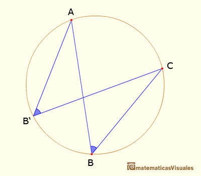
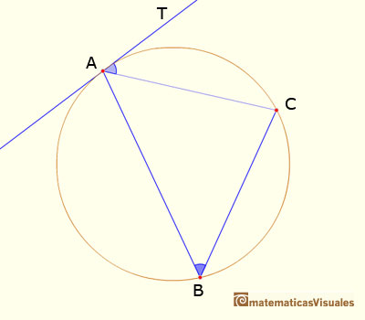

En geometría, un ángulo inscrito es el ángulo convexo que tiene su vértice en una circunferencia, las semirrectas que constituyen sus lados son secantes o cuerdas de la misma.
Dados dos puntos en una circunferencia, los radios desde el centro de la circunferencia a esos dos puntos forman un ángulo central.
Un ángulo inscrito es un ángulo subtendido en un punto de la circunferencia por otros dos puntos de la circunferencia. Un ángulo inscrito está definido por dos cuerdas de una circunferencia que tienen un extremo común.
Euclides enumera las siguientes proposiciones, entre otras, referidas a la circunferencia:
I.- En una circunferencia, el ángulo cuyo vértice está en el centro es el doble del ángulo cuyo vértice está en la circunferencia cuando los rayos que forman el ángulo cortan a la circunferencia en los misos dos puntos.
Esta proposición también se llama Teorema del ángulo central: El ángulo central subtendido por dos puntos de una circunferencia es el doble que cualquier ángulo inscrito subtendido por esos dos puntos.

II.- En una circunferencia, una cuerda subtiende ángulos iguales cuando los vértices están en cualquier punto de uno de los dos arcos que determina la cuerda.

III.- Si desde el punto de contacto de una tangente a una circunferencia se traza una cuerda de ésta, el ángulo que forman la tangente y la cuerda es igual al ángulo que subtiende la cuerda y cuyo vértice está en cualquier punto de la pare de la circunferencia que queda en el lado distante de la cuerda.
Links de ayuda